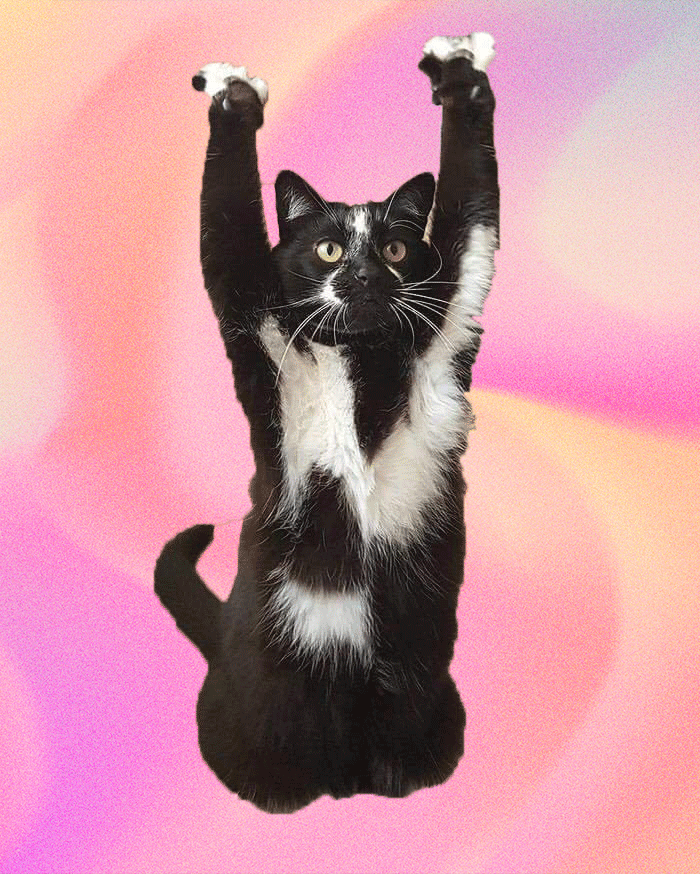

For my first animated GIF, I used the Vector Eye Illustration that I designed in Illustrator for Homework 5. I imported my work to Photoshop and used the Timeline panel to create a frame-by-frame GIF animation. I kept the movement simple so that the blink would loop smoothly. I also tweaked the frame delay settings to control the speed and make the motion feel natural.
For my second animated GIF, I created a cut-up cinema using a photograph and the Puppet Warp Tool on Photoshop. I first selected and isolated my image from its background using Subject + Layer Mask, then I duplicated the image in different layers. On each layer, I slightly changed the poses using the Pupper Warp Tool. I arranged each pose as a Timeline frame and tested different playback speeds until the animation fit my expectations.

This homework helped me understand the basic logic behind animation by breaking movement into frames. When I was younger, I used to make animations in the corners of my notebook and flip through them when I was bored in class It was really fun testing out the animations at the end and seeing the final product. I did find the cut-out animation a bit difficuly as I worked on it at the end of spring break and I had to refresh my memory on the different functions in Photoshop. The blink animation allowed me to bring a project that I am really proud of to life.